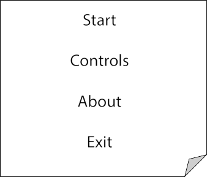
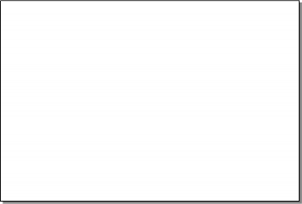
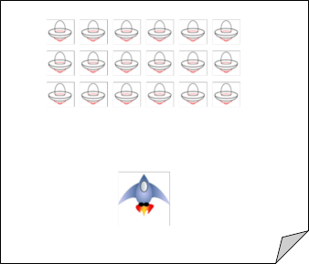
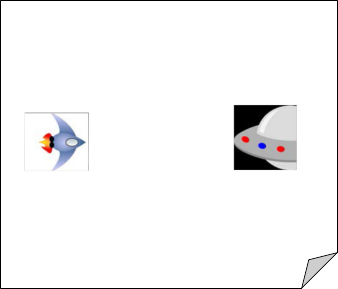
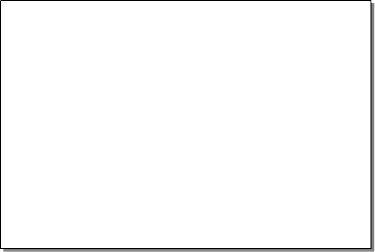
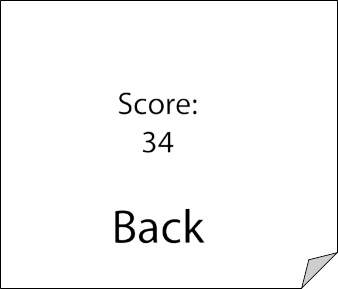

Pseudo code for main menu scene:
Game start
Integer game value - score = 0
integer game value – player health = 3
Display background image “main_menu_background.img” Play music file “main_menu.wav”
Display title of game “attack on earth” Display menu option as button “play” Display menu option as button “controls” Display menu option as button “about” Display menu option as button “exit”
If option “play” pressed then:
Move to scene “main_level” Else if option “controls” pressed then:
Move to scene “controls_page” Else if option “about” pressed then:
Move to scene “about_page” Else if option “exit” pressed then:
Exit game End if
Pseudo code for controls page:
Display background image “secondary_menu.img” Play sound file “main_menu.wav”
Display control info on screen Display menu option “back” If option “back” is pressed:
Change scene to “main_menu” End of
Pseudo code for about page:
Display background image “secondary_menu.img” Play sound file “main_menu.wav”
Display about info on screen Display menu option “back” If option “back” is pressed:
Change scene to “main_menu” End of
Pseudo code for main level scene:
Each enemy gets integer variable enemy health = 3
Display background image “galaxy.img” on permanent vertical scroll Play sound “main_level_sound.wav”
Display the player on bottom middle of the screen Display a grid of 6x4 of enemies above the player
Loop:
Set enemies movement speed to 10
Wait till enemies hit the edge
Set enemies movement speed to -10 Wait till the enemies hit the edge
End loop
If the right arrow key is pressed then
Set the x-speed to 10 for the player Else if the left arrow key is pressed then
Set the x-speed to -10 for the player Else
Set the x-speed to 0 for the player End if
If the space key is pressed then Create bullet in front of player
Set y-speed of bullet to 15 to send bullet up End if
If enemy bullet hits player:
Minus 1 from the players health Flash players sprite to inducate hit
End if
If player health is 0 then:
Change to “game over loss” scene End if
do
generate random number
create enemy_bullet below the enemy set y-speed for enemy_bullet to -15
repeat do after randomly generated amount of time
If bullet hits enemy:
Flash enemy to indicate hit Minus 1 from enemy health
End if
If enemy health is 0 then:
Kill enemy remove from scene End if
If enemy hits player then:
Player health -1 End if
If player health <= 0 then:
Change to scene end game End if
If there are no enemies left then: Change to “minigame” scene
End if
Pseudo code for mini game scene:
Display background image “galaxy.img” on horizontal scroll loop scrolling left Play sound “main_game.wav” on loop
Create player on middle left of the screen facing right Create boss_enemy on middle right of the screen facing left
If up arrow key pressed then: Set player y-speed to 5
Else if up arrow key is not pressed then: Set player y-speed to -5
End if
End Game screen:
Display background image “galaxy.img” on vertical scroll loop scrolling left Play sound “main_game.wav” on loop
Create back button bottom center of screen Draw score center of screen
If option “back” is pressed:
Change scene to “main_menu” End of

Play controls about exit

Play moves onto game screen Controls bring up basic control screen About moves to simple about page Exit just closes the game

Scene 1 Main game
Space invaders with defence blocks
Upon killing every enemy moves to scene 2

Scene 2 Mini game
Same space invaders player ship but moving vertically Enemy fires bullets side wards in a solid laser fashion
Upon killing the enemy return to scene 1 Repeat until death


Scene 3 End Game
The players end score is displayed in the centre of the screen
Back button at the bottom of the screen to return you to main menu